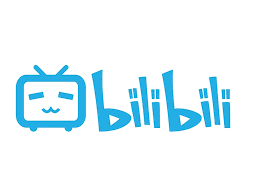
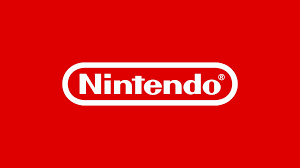
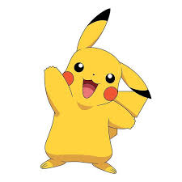

Hello, I'm Tianwei (*^__^*)
I'm a student in Kedge Business School in the campus Luminy and I will graduate in next year. After my education I'm looking forward to starting up my own campany with my friends.I love the films,animations, football and video games. My favorite football club is Shanghai Shenhua, my favorite campany of videogames is Nintendo, I like the series of pokemons very much. My favorite film is spirited away.
career
I'm a student in Kedge Bussiness School learning start-up and I'm going to graduate in the next year, after then I'll go back to China to study another year in Renmin University of China to get the diplome of finance major.After then I'll start-up a company with my friends and now we are looking forward to start a restaurant with a different operational mode.
spirited away
This is my favourite film.The first time I saw this film I was in the kindergarden, at that time I was a little scared of the story and the characters in the films but even though I was extremely attracted by the film. After than when I was older I have been watching the film for so many times that I've already recited the story, but I still enjoy the time of watching it.

And in China I always see the films and the animations on the website "bilibili", this is a chinese website like youtube and niconico, we can see the tv products and some interesting videos made by uploaders. It's really a wonderful site. 
Shanghai Shenhua
It's my hometown's club and has a wonderful history. When I was young in 2008, my father brought me to the stadium and from that time I became a real fan of this club.I can even remember the match was contre Dalian and we won as 2-1.Since then I have already followed the club for 11 years, the club has become a part of my life. The most famous foreign player of the club is Didier Drogba(in the second half of the season2012)and Carlos Alberto Martínez Tevez(in the season2017).And we have the best fans in China, we cheer all the time during the match to encourage our players.Our captain, Giovanni Moreno, has already played for 7 years though he is Columbian, and with his lead, we won the championship of Chinese cup in 2017, now he is guiding the team to win the honor agian.
Nintendo 
This is my favourite company of video games, like pokemons and the legend of selda, the Nintendo Switch(NS) now is the best gameplayer in the world.The game series pokemon was approved to be one of the best game series in 20th century and now still launch new game constantly.I started to play pokemon when I was in the kindergarden.At that time I was attracted by the animation of pokemon and then I started to learn the world of pokemon and played the games.Now I still play the latest game in my spare time. 